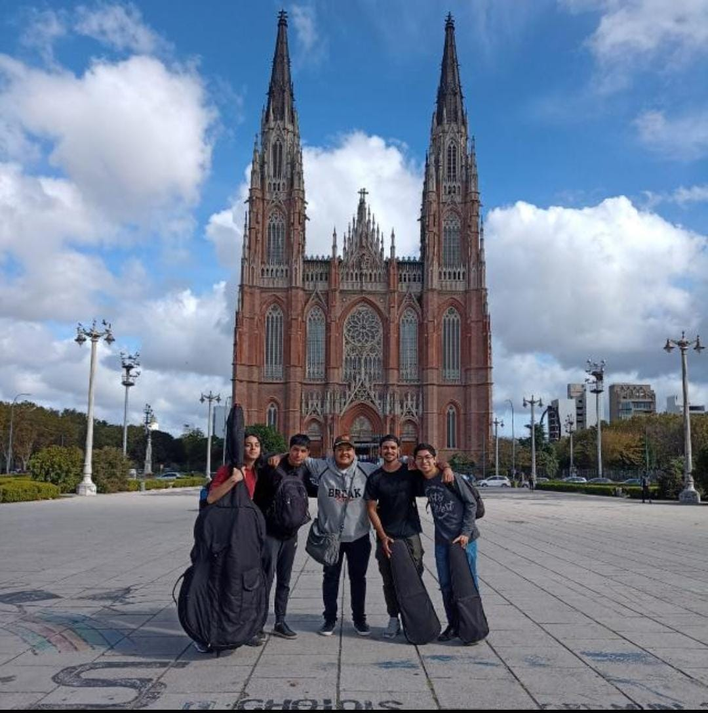
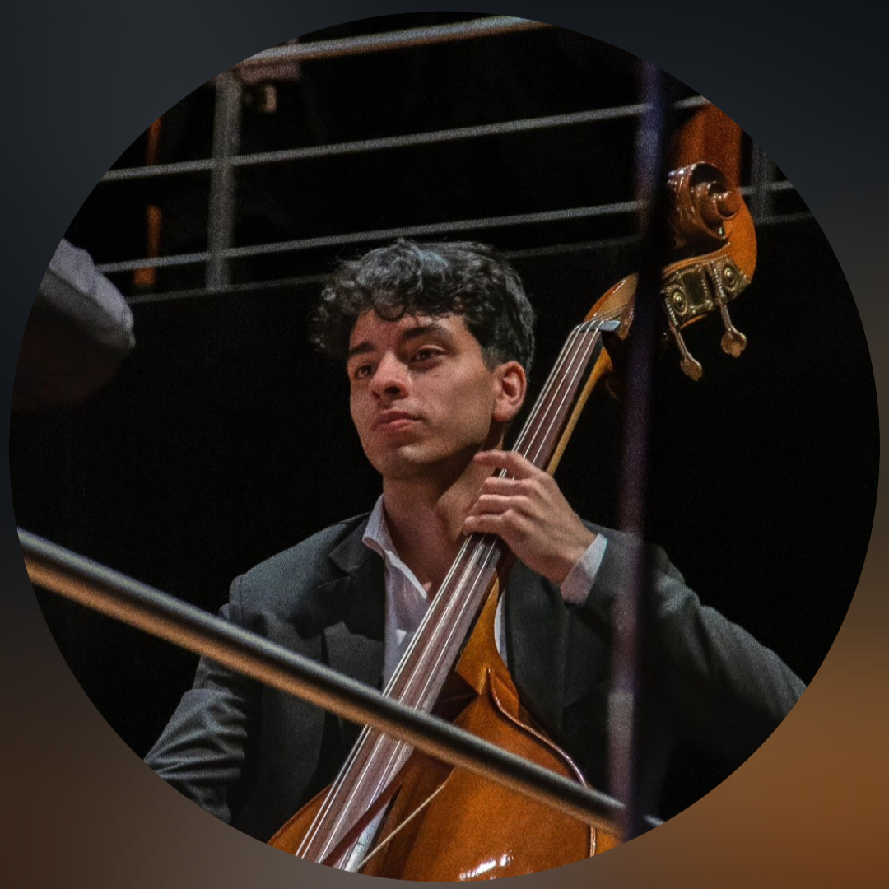
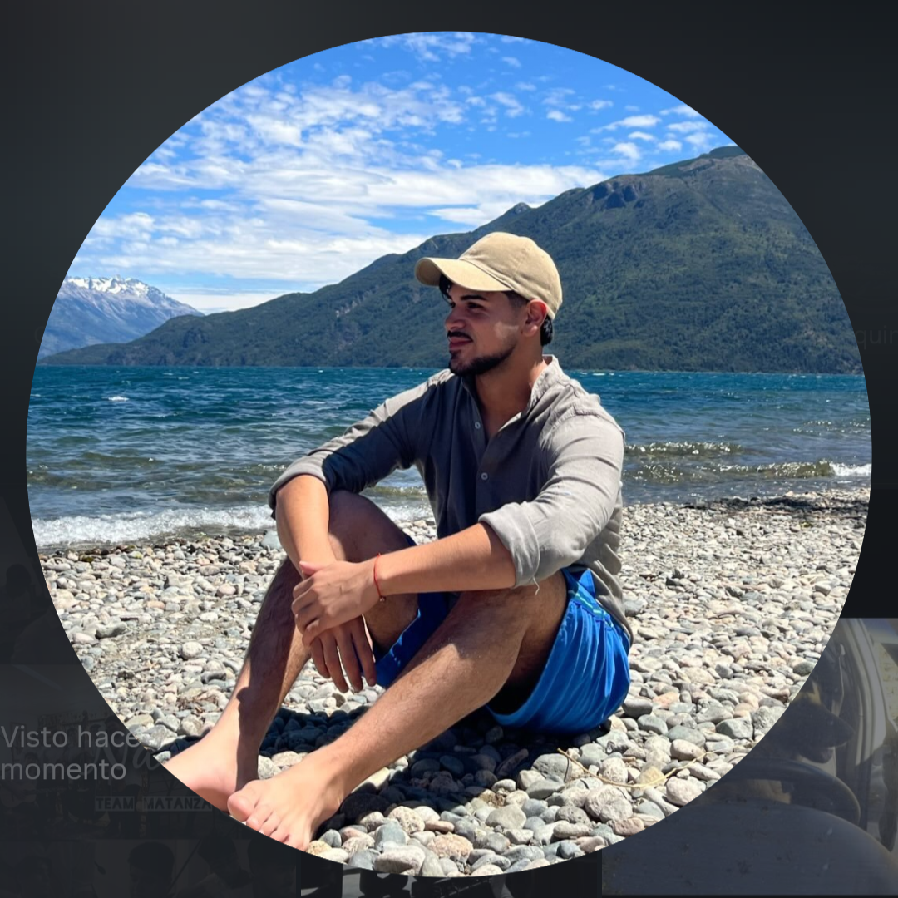
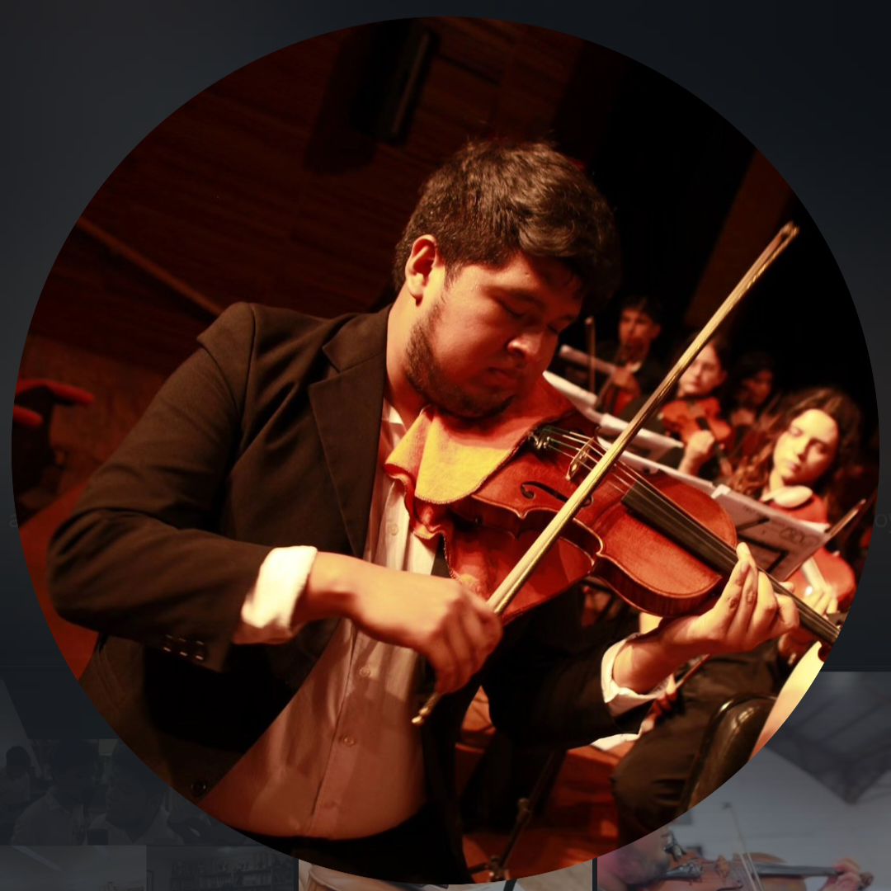
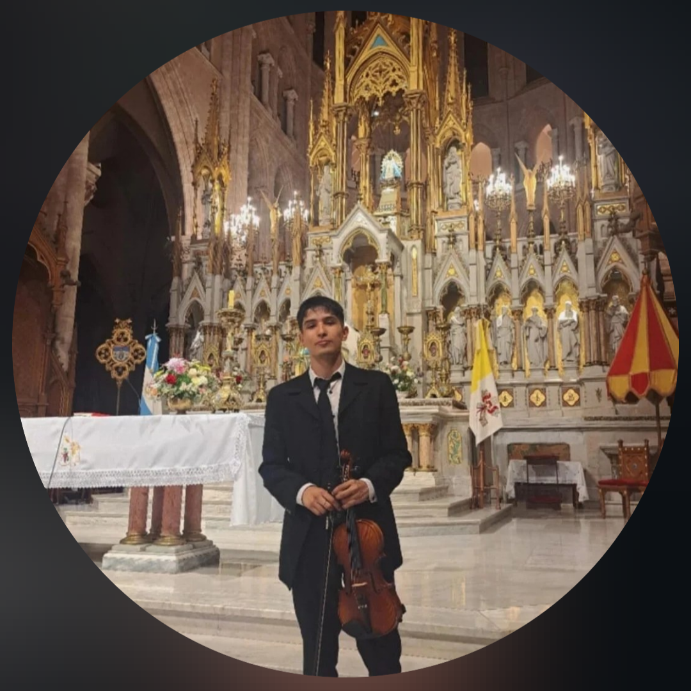
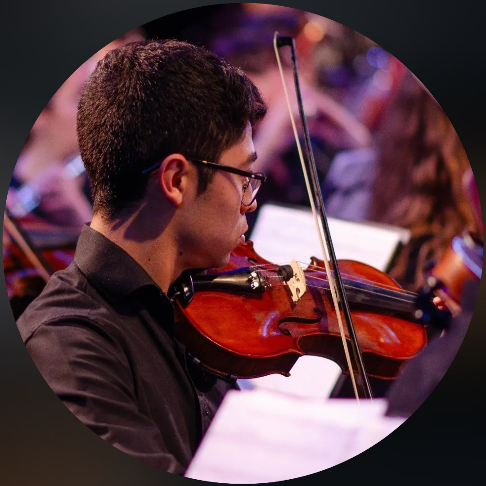

Biografía
Nuestras raíces nacen en las orquestas escuela de La Matanza. Aunque crecimos en distintas agrupaciones, la música se encargó de cruzar nuestros caminos. Con el tiempo, lo que empezó como juntadas para compartir y divertirnos, se transformó en una duradera amistad.
El punto de inflexión llegó en 2023, cuando cinco de nosotros fuimos seleccionados para integrar una Orquesta Sinfónica Juvenil a nivel nacional. Rodeados de talentos de todo el país, fue allí donde, por nuestra llamativa forma de ser, nos bautizaron definitivamente como el "Team Matanza".
Somos músicos de formación académica —nuestros instrumentos de cabecera son el contrabajo, la viola y el violín—, pero poseemos una buena capacidad de versatilidad: agarramos la guitarra, el bombo, cantamos y nos adaptamos a cualquier escenario.


Identidad Sonora
Tratamos de representar siempre a nuestro barrio, la cultura y la música argentina, combinando raíces folclóricas y urbanas con todo lo que aprendimos en nuestra formación académica.
Recientemente compartimos un video tocando el tango "Nada", un arreglo donde varios de nosotros cantamos mientras todos tocamos nuestros instrumentos nativos.
Nuestros gustos y repertorio varían entre:
Nuestra Experiencia
Un recorrido compartido de aprendizaje y hermosos escenarios.
Formación en Orquestas
Estamos esparcidos y agradecidos de participar en las orquestas juveniles más grandes del país, como La Orquesta Académica del Teatro Colón, La Sinfónica Juvenil Nacional y La Sinfónica Juvenil Bonaerense. En este camino hemos sido acompañados por grandes maestros, como el director Andrés González, a quien le debemos gran parte de nuestra formación, entre muchos otros.
Movistar Arena y Estadios
Junio 2025
Tuvimos la linda oportunidad de presentarnos como ensamble en el Movistar Arena acompañando a Paulo Londra. Además, participamos en el Estadio Único Diego Armando Maradona grabando la canción del Mundial 2022 junto a La Mosca.
Compartiendo escenarios
A lo largo del tiempo, tuvimos la suerte de ser convocados para grabaciones y conciertos, compartiendo música con grandes artistas como Maggie Cullen, Benito Cerati, La Mosca, Edu Schmidt y Teresa Parodi.
Crucero "Peace Boat"
Enero 2025 y Enero 2026
Algunos miembros de nuestro team compartieron conciertos y llevaron la cultura argentina durante semanas a bordo del crucero japonés "Peace Boat".
Giras y recorridos
Tuvimos la posibilidad de hacer una gira con nuestra primera orquesta recorriendo la provincia y lugares como Alberti, Dolores y Luján. Además, pudimos conocer juntos y recorrer el predio de la AFA Lionel Andrés Messi.
Miembros del Team
Los 5 fundadores del Team Matanza.

Lautaro Duarte
Contrabajista
Comenzó a tocar el contrabajo en la Orquesta Escuela de La Ferrere donde hoy se desempeña como docente. Inició sus estudios en el Conservatorio de Morón en 2021 con el Profesor Gabriel Amado y hoy los continúa en el ISATC. Actualmente forma parte de la Orquesta Sinfónica Juvenil Bonaerense, la Orquesta Sinfónica Juvenil Nacional y la Orquesta Académica del Teatro Colón.

Thomas Bleckmann
Violista
Violista con una profunda vocación orquestal y docente. Cursa la Licenciatura en Viola en la Universidad Nacional de las Artes (UNA) y es miembro de la Orquesta Sinfónica Juvenil Bonaerense. Tras haber sido becario del programa Martha Argerich, actualmente continúa perfeccionándose con los maestros Ana Corrado y Javier Portero.

Nahuel Jurado
Violinista
Violinista de gran sensibilidad y una destacada capacidad interpretativa. Cursa sus estudios en el Conservatorio Alberto Ginastera con la profesora Valeria Kaladjian. Su versatilidad lo ha llevado a ser sesionista en festivales como Cosquín y embajador en el crucero "Peace Boat". Se perfecciona con maestros como Pablo Sangiorgio y Andrés González.

Antonio Mansilla
Violinista (y guitarra del ensamble)
Apasionado por la música desde joven y concertino de la Orquesta Escuela de La Ferrere durante muchos años. En 2023 ingresa al Conservatorio de Morón en donde hoy continúa sus estudios en el Profesorado de Violín. Miembro de la Orquesta Sinfónica Juvenil Bonaerense. Actualmente se perfecciona con el Maestro Guillermo Kajrnetz.

Tomas Ojeda
Violinista
Violinista de raíz académica y popular. En 2019 comenzó sus estudios en el Conservatorio de Música “Alberto Ginastera” con la profesora Valeria Kaladjian. Es miembro de la Orquesta Sinfónica Juvenil Bonaerense y la Orquesta Sinfónica Juvenil Nacional “Libertador San Martín”. Actualmente se perfecciona con el maestro Daniel Robuschi.